West Highland Way June 2019
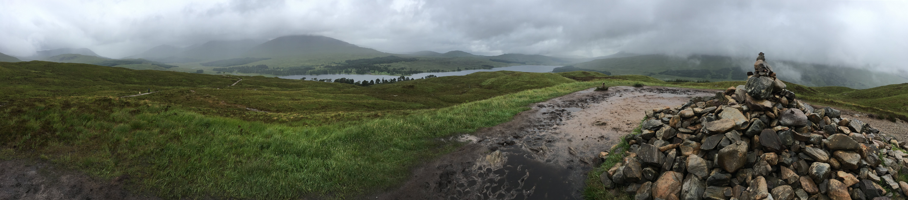
Introduction
Great memories are often the culmination of peaks and troughs. In truth, much of the West Highland Way (WHW) was a battle; the midges, the injuries, the fatigue, the frustrating slow progress and of course the relentless onslaught of ticks. And yet despite our pains, every day brought moments of contrasting monumental elation; sleeping in a dry bothy, an ice cold lager after a long slog, a warm shower, a large fish & chips, Irn Bru in abundance and, possibly above all, the feeling crawling into a midge-free tent. The ups and downs made the WHW wondrous.
North west Scotland is a land of rain, cloud and mist. Whilst the mild climate makes the wilderness relatively safe by international standards, bleakness is synonymous with the region’s charm. When Ramsay and I visited Loch Lomond during the 2019 easter weekend heatwave, we saw a small stretch of the WHW in the finest of conditions. High twenty degree heat drew sunseekers to the edges of the loch in droves. The shores were littered with wild campers and the loch itself full of boats, watersports and leisure cruisers. Of course the early season also meant the air was midge-free. We knew it was privileged weather but what we saw still inspired us to attempt the full 154km route a couple of months later. As we passed the same spot in June, soaked to the bone and caked in midges, the experience was so inverted that it was bearly believable that we were in the same place.
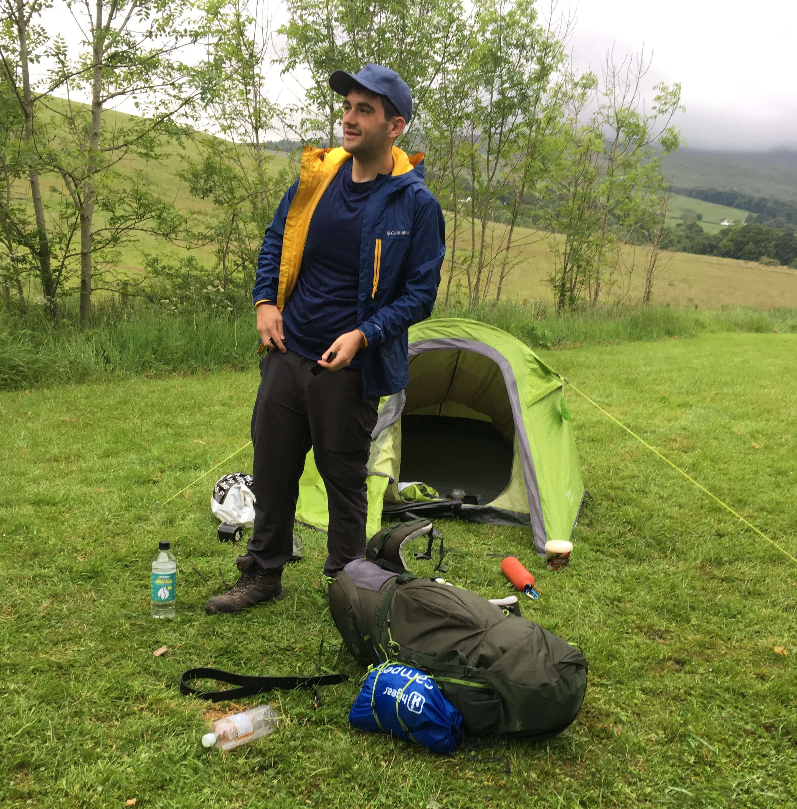
Day 0 "16/06/19"
With Ramsay competing in a charity boxing match the day before, and I having drunk heavily throughout it, neither of us arrived in Glasgow in the freshest of form. On the train to Carlisle I had passed over the Ribblehead viaduct and looked out at the only training we had undertaken - the illustrious Yorkshire 3 peaks. We’d found the 24-mile walk itself fairly easy; but we had no idea how both the heavy backpacks and the multi-20-mile stretches on the WHW would affect us. With him travelling up from Manchester and I from Leeds, we met mid-afternoon at Glasgow station.
The weather was excellent, but the journey to Glasgow proved long and by the time we’d missed a connecting train, and killed some time catching up in Tim Hortons, we were both eager to put some miles away. The train to the starting point at Milngavie took around 30min, taking us to the outskirts of Glasgow. Before heading under the metallic arch that marked the start, we spent some time gathering supplies and filling hydration packs; as Ramsay tried to affix a plastic bag of M&S food to his already enormous rucksack, rain started to fall with increasing urgency. Any illusions that we might experience the Easter weekend weather were immediately shattered.
We knew that most viable campsites on the first night would be charging around £20 for the privilege. Under the Scottish Land Reform act, almost any unenclosed land in the highlands can be camped upon wildly and more importantly, free of charge. We decided to use any funds saved from wild camping to use frivolously eating out at pubs, restaurants and cafes along the route. We correctly reasoned that good food in a dry space was more soul warming than a shower. As we passed under the start point, it was pointed out that I had failed on my promise to map the route. A £4.99 monthly subscription on the OS map proved an invaluable purchase; this granted access to all explorer maps in the UK, as well as ability to save offline. Compared to the cost of purchasing the 6 OS maps needed to cover the route, this was a bargain.
The West Highland Way is usually attempted as a 5-day or 7-day challenge. Arriving on Sunday 16/06/19, we knew we wanted to return from Fort William the following Sunday having climbed Ben Nevis on the Saturday. Any miles put away on the first night would therefore take the edge off the standard 5-day challenge, which averages at about 20 miles per day.
The first two hours of walking proved relatively easy. We followed a tarmacked path out of the town, through Murdock country park and out into the rolling countryside. We managed to grind out some of the small talk topics inefficiently quickly; “How’s the job going?”, “What about life in general?” and “What now and next?”. We passed through ominous warnings of Lyme disease prevalence in the area. Passed on via ticks, the highlands are a UK hotspot for the grim creatures. Whilst not feeling particularly remote, the weather passed and soon the setting sun was out in full beam and the landscape looked glorious.
Though we had the legs for a many more miles, we decided it best to find a spot to properly enjoy the evening. Just outside Oakwood garden centre next to the A81 we found a nicely enclosed patch that looked too good to be true. A freshly mown lawn, views over the countryside and evidence of many a camper before us. After some deliberation, we erected our tents and tucked into the M&S sushi, nuts and chicken wings purchased a few hours earlier. Nothing about the experience felt wild. We took the opportunity to compare the quality of our gear.
Approaching 21:00, midges started to become bothersome. Ramsay unveiled his full face midge net and I conceded that I had been somewhat neglectful on the subject. We took both their prevalence and annoyance as an ominous sign; we were hardly in the highlands and they were already forcing us to bed early. Nevertheless, a quick transition into tent resulted in an excellent night’s sleep. I drifted in and out of deep sleep as rain fell gently on the tent.
Day 1 - “bloody midges”
We woke up in the morning to a steady stream of drizzle. For all his momentum and power on the highland hills, Ramsay’s ability to waste time during morning preparations was astonishing. We would later describe this inefficient use of morning as “pottering”; and in fact it eventually got accounted for in our day planning. Having risen around 07:00, we left camp shortly before 9:00, aiming for breakfast in Drymen. Our tents were sodden after the night’s relatively light rain and it was disconcerting that we may have had our first and last night in the dry.
As we followed the road north, we noticed the commercialisation of the WHW. Rows of houses with honesty boxes selling Irn Bru, farms offering up lawns for low fee camping and even pop up bars and coffee shops. On that soggy monday morning, those outlets were looking rather desolate and we saw little in the way of people until we reached the outskirts of Drymen. Diverging off the WHW to reach the town, we crossed paths with a walker with an alarming determination in his eyes. He looked out at us through his hood, ginger wispy hair spilling out across his shoulders and he quickly shifted his gaze to the path ahead of us. Geared with what looked like ice climbing equipment, we wondered what was driving his resolute guise. We pondered the likelihood of him being a psychopath and fortunately or unfortunately, we were not afforded the chance to find out.
We found our way to a coffee shop called Skoosh, opposite the village hall in Drymen. Wet and hungry, we ordered salmon and a full english respectively. Ramsay was delighted that a single order of a bacon breakfast item resulted in two rashers, his ordering of two portions therefore got him a wholesome 4 rashers. I had a salmon bagel that represented similarly good value. We made our way to Spar to gather provisions for the 20-mile walk ahead. It became increasingly apparent that Ramsay had had a rough night with the midges. “Midges, midges'', one lady beckoned as she pointed towards his lumpy face. Midges were bad enough, midges plus allergy to midges must have been horrendous.
We walked around a mile along the John Miur way to get back to the WHW around the Garadbahn Forrest. Surrounded by Scottish pine tree, the dampness spread a lovely woodland smell. As we headed to the outskirts of the trees, we got a first look at Loch Lomond. We entered the Loch Lomond camping management zone and the rain quickly intensified. At the splitting of the WHW, we took the path east towards the 350m peak of conic hill. We entered moorland on the base of the hill and the path slowly began to slope. This was approximately the point where I noticed a twinge in my lower shin. In a frenzy of focus, Ramsay upped the pace and I was left behind, fairly concerned for my physical state. In such situations it’s always difficult to gauge severity; for sure the leg was not hurting severely, but I knew that 80 miles of walking and the UK’s highest peak were not going to improve a minor muscle injury.
We rejoined on the scramble path up to the peak of Conic Hill. The views from the top were fantastic; though the weather not so much. We could see the many miles we would need to cover if we were planning to walk the length of the loch by the following day. My leg hurt and some initial seeds of doubt were present in my mind; the walk down to the Balmaha visitor centre was painful. Whilst the route was noticeably busier, the trees were fantastic and the rain began to subside.
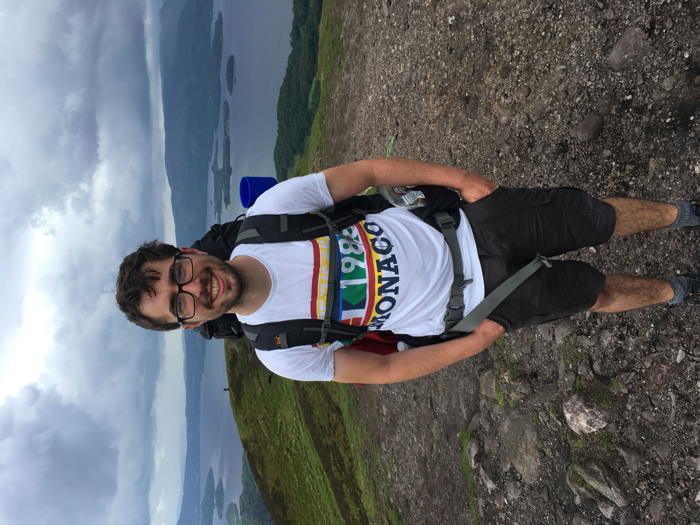
Along the whole route of the WHW, the weather was rarely cold; this made it very difficult to manage body temperature under a waterproof jacket. Taking a coat off is not simple when carrying a 20kg rucksack, it requires a not insignificant amount of energy; in Ramsay’s case it also required two people. As such, many an hour of walking in the showery rain resulted in the feeling of being trapped in a greenhouse of a coat. By the latter days of the walk, the sweat and the heat would come to haunt the odour of our tents and bags. This battle of temperature would ensue all the way to Inverreran along Loch Lomond. We stopped briefly in Balmaha for Ibuprofen and snacks; having covered around 14 miles, the first hint of fatigue was starting to set in.
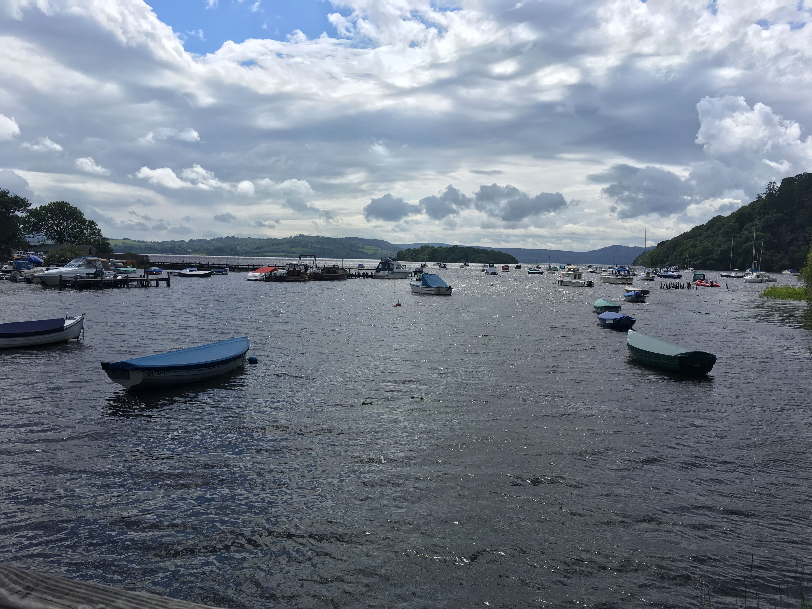 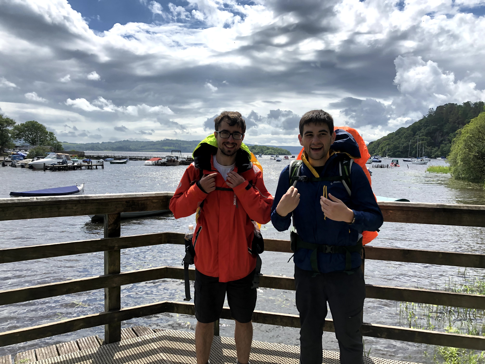
The 7 mile walk to Rowardennen was a slog. We noticed on the final element of many sections of the walk, that time began to slow down. The awareness that a section was nearly finished, forced a certain amount of clock watching - if we saw a 3 mile sign, we normally knew it would only be an hour to go. This was exacerbated by the fact we’d completed much of this section the previous bank holiday weekend - albeit most of it at a far faster walking pace, or even running.
Though the section was largely flat it took us a couple of hours to reach The Clansman Bar, by which point an experiment with removing my waterproof had failed and left me sodden. A change of top, removal of socks and putting on sandals was a welcome relief at the bar. Ramsay’s commitment to the keto diet persisted to around this point in the walk, but unfortunately I had to watch him 3 sides of chicken wings before he finally called it quits. I enjoyed a lentil soup and veg thai curry, both sat well on my empty stomach. The sun was well and truly out at this point, sitting on the grass outside the pub reminded us of the weather we had seen a few months before; it was glorious. As we allowed ourselves to dry in the sun, we considered our options for the night’s camping. We knew there was a bothy around 3.5 miles along the way; we judged it a.) quite possibly too far with the sun setting and b.) could well be rammed with tourists. We decided to leave it only as back-up plan and we hoped that as the road ran out, and we left the camping restriction zone, an obvious wild spot would appear.
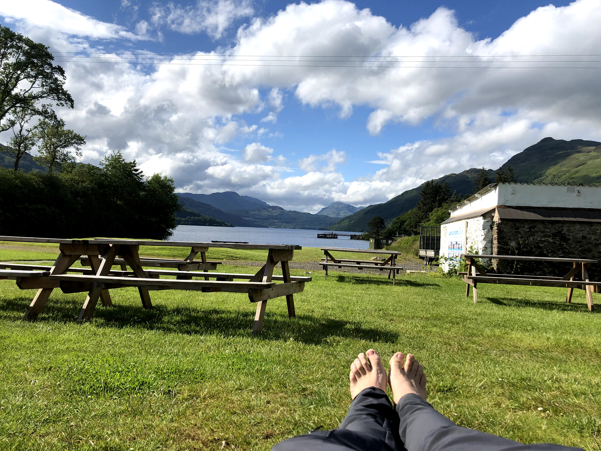
We walked past the base of Ben Lomond, by this point it was around 20:00 and the sun was heading to the horizon. We were back in our wet gear and it felt far from pleasant. After a few false starts, a wild camping spot opened up just off the path, it looked fabulous. A large mown spot under overhanging trees, with the lake water audibly lapping next to the shore. We were delighted and it seemed the perfect spot to end a fine 24-mile walk. I took a dip in the Loch while Ramsay cooked up tea on the trangia; we slowly, but very surely, realised the extent of the midge problem in Scotland. What started with a few nibbles here and there, easy enough to bat away, ended with multiple clouds surrounding and even chasing us across camp. With midge nets and long trousers quickly put on, we suddenly had to squint to see the beauty that had led us to camp there in the first place.
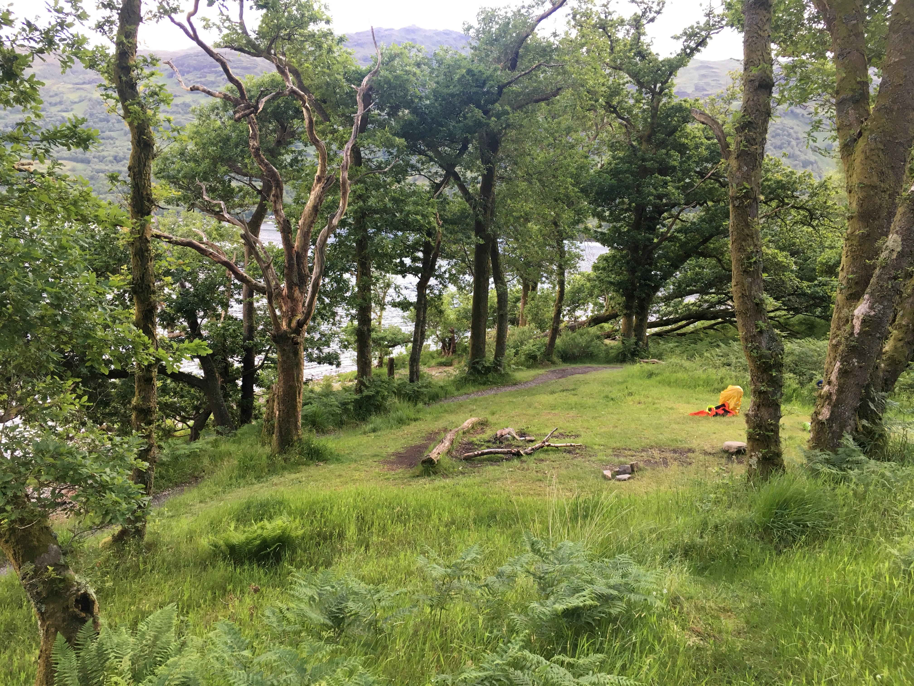 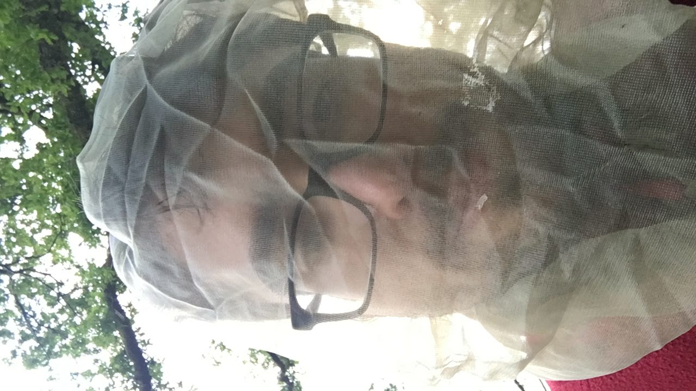
The night was slowly approaching, by this point it was around 22:00 and we decided to call it quits and get into our tents. Though we attempted to be quick in transition, we would both look up in our dimly lit lents and see hundreds of midges swarming around us. Ramsay called out that he’d found a tick crawling on the outside of his tent; as he did I looked down and immediately found one crawling on my arm. Unlike spiders or even midges, I learned on the WHW that ticks are very difficult to kill. Even a sharp nail against their body seemed to have limited effect; of course once inside their human host, medical advice affords them extra immunity. To remove or kill an attached tick, is to risk exposing yourself to Lyme’s disease. Unfortunately, I found two more, battling each time to kill them. I found one buried in my arm and by this point I had seen enough; it was time to get out of the tent. At the same time, Ramsay had been involved in a similarly distressing battle with the midges. Without the net to protect his face, he’d felt the full wrath of allergic reaction.
As I stood on the bank of Loch Lomond, flicking ticks off myself under the light of my phone, I couldn’t help but wonder how it had gone so wrong so quickly. Ramsay attempted to pull out an attached tick on my right leg. The one on my arm had ominously disappeared. His efforts proved in vain however, the knife was too big to get leverage on the tick’s small body. Light was quickly diminishing and we realised that our chances of sleeping soundly had long evaporated. When Ramsay suggested making a dash for the bothy, I gave it little thought; we had few other options. I felt a little naive that my only usable torch was that on my phone; fortunately Ramsay had both hand and head torch to guide the way. When the rapid packing up of tents began, the weather turned and rain began to fall with increasing urgency. The mood shift in 20 minutes was astonishing, we felt robbed of what had initially been a fantastic end to the day. As we left camp, torches in hand, knowing the Bothy was close to two miles away, adrenaline was flowing.
On the east coast of Loch Lomond, northwards of Rowardennen, the road runs out quickly; with it disappears any settlement or potential sites of aid. If the bothy mission failed, we would be stuck four miles from any navigable road. We followed the undulating path to Rowchoish over the next forty or so minutes; being able to track the route on the OS App was a god send; google maps had little awareness of where we were or where we were going. There was a distinct incline as Tarbet became visible on the opposite bank of the Loch, the trees became more dense and it suddenly became more difficult to see the path. When we diverted off the WHW to the suspected site of the Bothy, our expectations were below minimal. It seems dramatic in hindsight, but I remember preparing mentally for a night sat propped against a rock. We passed around the rear of the Bothy; I tentatively opened the door, cautious not to awake anyone who might be inside.
Shining my torch around the door, the dryness of the large space inside the Bothy was the first thing I noticed. Looking to the back wall, I quickly realised it was empty. The luxury we had just stumbled upon took us by complete surprise. The bothy was in astounding condition; completely dry, with plenty of firewood and, joyously, midge free. Just as our spirits had been toppled an hour before, they were raised straight back up and more. There was an unparalleled cosy atmosphere as we lit a fire, checked ourselves for ticks and prepared our bed mats. The tick on my leg would have to wait until the following day, nevertheless the sense of elation was huge. I drifted in and out of sleep for the next 9 hours; every time the rain woke me, I felt the warmth of my sleeping bag and drifted easily back to sleep

Day 2 - “Long slog to Inveraran”
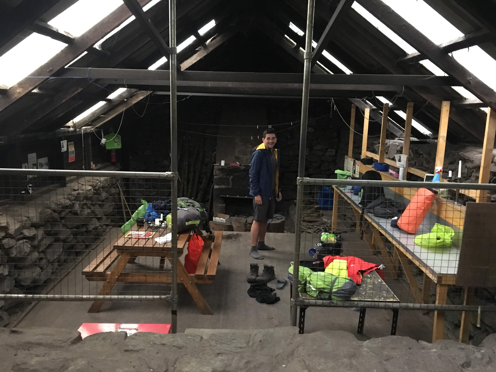
We were awoken on day 2 by a series of people inspecting the Bothy. It was past 09:30 and we’d well and truly made ourselves at home, gear spread across all the surfaces of the Bothy. This probably made people feel unwelcome and was far from the code that Bothy visitors are expected to abide. Around 10:00 an Israeli couple popped their heads around the door, their ultra lightweight rucksacks betraying their luxurious approach to the walk. The chap, Roy, said they’d travelled up from London with a tour and were delighted at having seen the queen a few days before. They offered us some Israeli coffee, I declined but reneged once the smell of roasted beans filled the Bothy. We were amazed that given their small rucksacks, the one thing they’d chosen to bring with them was coffee. We mentioned we’d abandoned camp the night before, haunted by midges and ticks. Roy offered to have a look at the tick on my leg. There was something slightly unnerving about a stranger trying out a surgical procedure he’d admitted was untested, nevertheless his tick knife also proved too big.
After Roy and his wife filtered out, Ramsay and I inefficiently went about packing away our things; the same process that took us 10min when abandoning camp, now took over an hour. We didn’t leave the Bothy till after 11; out of water, we established it would be a 4 mile walk to Inversnaid where we reasoned we could get breakfast.
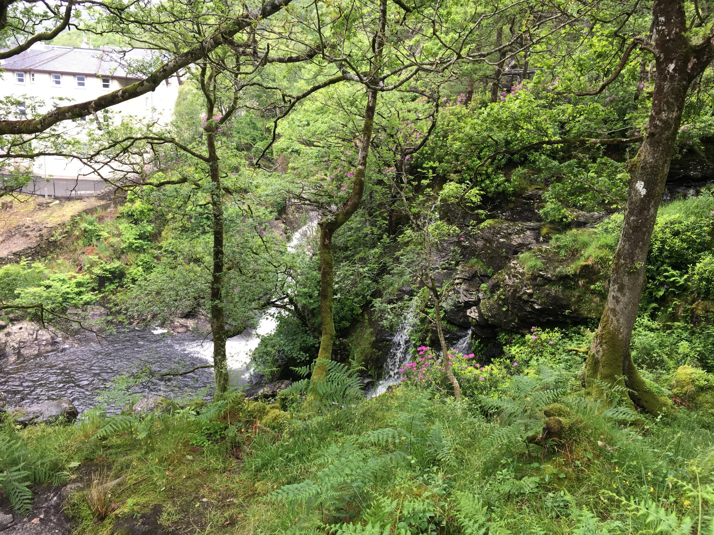
Like all small walks on the WHW, getting to Inversnaid was a slog. Much of it was winding path through woodland; we knew we near when a tour boat announced over the tannoy. There was something slightly jarring about the voice given the sense of wilderness we had felt the night before. We passed Roy, crossing a bridge on our way into Inversnaid. It quickly became apparent that we had overestimated the facilities in the village; the only establishment was a large hotel.
The carpeted walkers area demanded that shoes be removed, given the amount of walkers passing through, we could not help but feel they’d missed an opportunity to further commercialise the passing walker trade. Nevertheless, breakfast was cheap, tasty and fulfilling. We attempted a paper quiz and took stock on plans for the day. Though it was 13:00 we decided to aim for Tyndrum, around 19 miles north; I would later realise this was the same stop I’d made on almost every visit to Fort William over the years.
As we packed up to leave, a group of 4 Glaswegian lads sauntered in. “Is it shoes off in there?”one asked. We said yes. “Posh cunts” he replied. It turned out they’d made their way to the hotel from Balmaha that morning; like us they were attempting to complete the route in 5 days. Given we’d started before them, we were a little alarmed by the lack of progress we’d made.
We left the hotel and embarked on what we estimated to be a 2hr 30 walk to Invereraran. The lakeside path quickly turned into the most ragged we’d encountered in the first 30 miles, it would also turn out to be the slowest section on the whole route. Littered with large rocks, short sharp inclines and large patches of mud; we tackled the route at a snail’s pace. The midges were out in force even in the daylight and our mood quickly worsened.
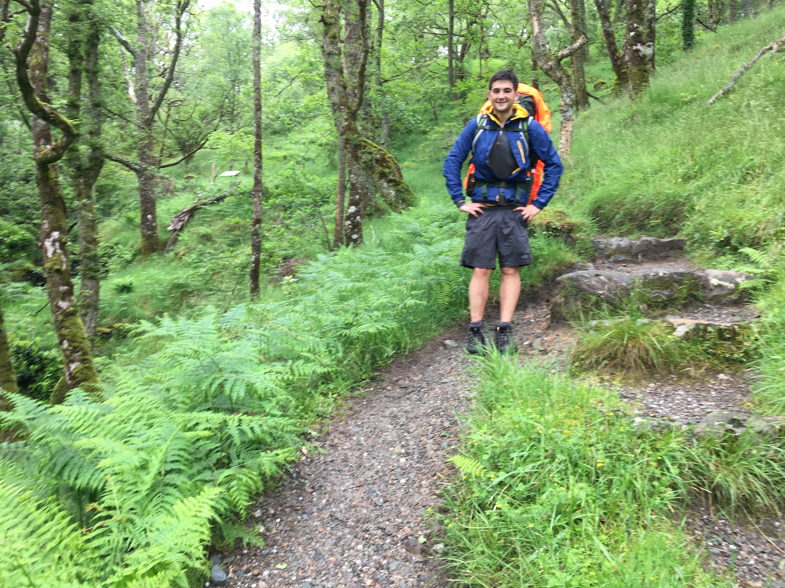 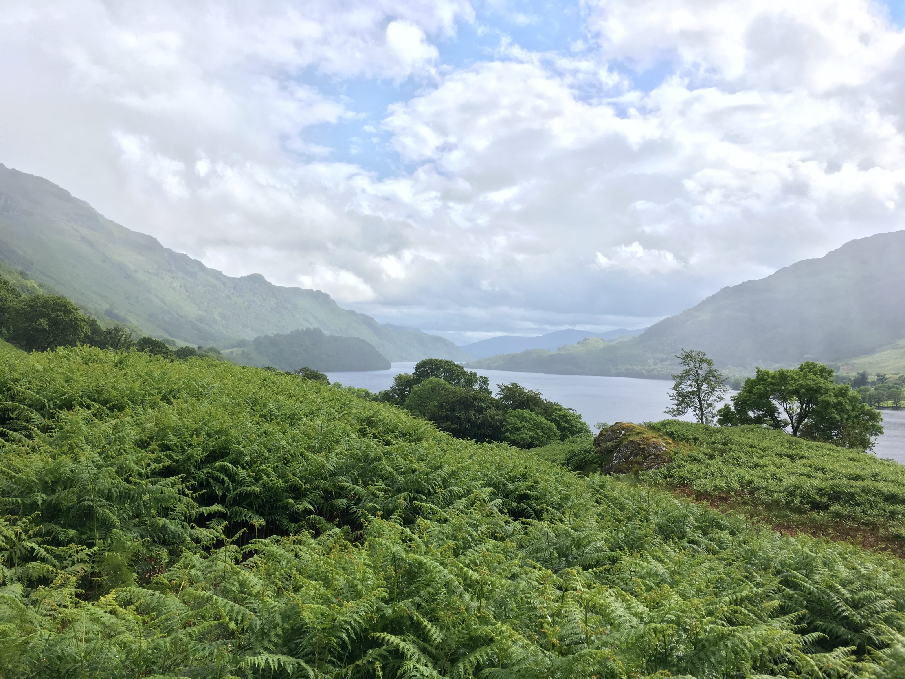
Again we made the mistake of clock watching; time immediately went slower and as I checked our progress on the OS App, our journey seemed like ever more a slog. Eventually the valley widened and the path became more navigable, our mood barely improved. We’d completed around 8 miles of walking by around 3 in the afternoon and realised that our chances of making it to Tyndrum, some 14 miles away, were disappearing fast.
We passed a second Bothy, one not in anywhere near the condition of that the night before. With bagged up rubbish next to the door, beer bottles scattered around and an unavoidable smell of piss, we were relieved with how lucky we’d been - but also saddened that any wayward travellers would have been denied the pleasure we’d been privy to. The Bothy’s curse was probably its proximity to Inveraran which by this point was a couple of kilometres away. We spotted powerlines dipping down the valley into the town from some distance away, we marked it in our minds and slowly trudged towards it.
Inveraran campsite was a very welcome sight. We’d initially planned to cross the river and turn back half a mile back into the main village; the campsite shop was equipped with a small size tick knife, plenty of food and a welcoming bar. We decided to stay put. While the rain was falling, we sheltered in the campsite dry room and Ramsay attempted to remove my tick with the newly purchased knife. It took around 10 min to coax it out and only at that point did I finally feel like I could relax. I had a couple of soft drinks in the bar and nursed my swollen leg. “I could stay here tonight”, I said to Ramsay. “I could stay here tonight',' he replied. Ultimately, it was only £8, I would probably have paid £5 just for a shower.
We were disappointed with our progress, around 10 miles completed for the day was well below expectations. But as I had my first, second and third beers of the WHW, I felt like I was relaxed for possibly the first time. We cooked up some pasta in the campsite kitchen and we slowly but surely noticed the presence of midges increase. At first a few nibbles here and there, quickly turning into an onslaught. There were few people walking outside without the sanctity of a midge net. On the whole trip, that Inveraran campsite would prove the worst for midges. Whilst Ramsay did some work admin, I put up the tents. I remember looking down at my fleece and seeing an ocean of midges. Without gloves, my hands were caked in them. It’s two weeks to the day that we were at that campsite, and my right hand is still peppered in little red midge bites. If it weren’t for the relative luxury of the campsite, with an indoor bar, showers and somewhere dry to store our bags, it would’ve been horrific.
That night we both slept in midge nets, covered head to toe with clothes, trousers tucked into socks. I’d heard that people avoided Scotland in summer because of midges, but I’d scarcely believed it could be that bad until now. Though I got into my tent quickly, I made the fatal mistake of nipping out to the toilet. As I stared up at the cloud of midges that followed me in, I began to regret the beers.
Day 3 - ”pin my medal on my chest, and tell my mama, I tried my best”
I looked up at my tent in the morning and saw the bodies of a million midges stuck to the moist tent exterior. A million more waited outside. Midge net on, I quickly packed away my gear while Ramsay sheltered in the bar. The campsite was busy with walkers preparing for the WHW. By the time we were nearing going, there was only a group of 5 French people remaining. They’d smoked a couple of cigarettes each by the time Ramsay had put away his tent. Their voices were loud and their attempts to converse with campsite staff were amusing.
We were amongst the last to leave the campsite at around 9; though our pace was nowhere near that achieved on the first day, the wide path quickly became a festival of overtaking. The midges were unbearable even while walking and it was probably after 10:30 that the head nets finally came off. “How valuable would a forgotten item have to be, for you to go back to the campsite and get it now?”. We pondered the question for a couple of minutes. Such was the frustration at the midges, and lack of progress the previous day, we put the figure somewhere between £50-100.
The path out of Inverran was steady compared with the day before. We made our way under the railway line; given the low prevalence of trains, it was impressive that one passed just as we ducked and hobbled our way through the low tunnel. Climbing up onto the other side of the valley, we saw a far more remote landscape. It felt like the proper highlands were starting to open up and we could see some of the higher peaks of the highlands stacking up in front of us.
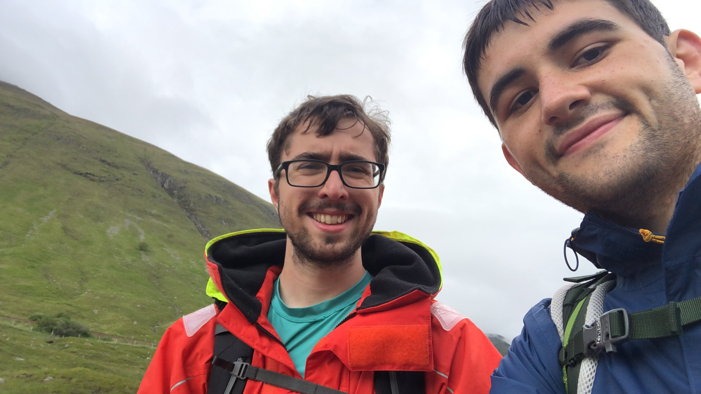
We passed an honesty box loaded with Irn Bru but short on chocolate bars. We continued along the side of the valley till around midday, at which point it took a sharp left into a wooded area. On the map it seemed short, but again this cursed a slow passage of time. The path was winding and we bemoaned not being able to see where it was going. My leg was very sore by this point and spirits were decreasing rapidly. Tyndrum was about 4.5 miles away, but we’d identified a potential stop less than half that. For the sake of energy and spirits, I felt I desperately needed the break.
The path through the trees made some significant gains in elevation but any chance of looking out across the valley was stopped short by the density of vegetation. We passed the group of 4 Scottish lads we’d seen in Inversnaid the day before. Three of the party were crowded around the fourth, top off he was affixing tape to his bare shoulders, presumably to avoid rubbing with his back. With a conditioned physique and audibly grunting, we dismissed it as a haze of testosterone. The slog continued for around a mile down the forest path. Shortly after we heard the same grunting coming up from behind. Two sticks in hand, the same lad was hobbling with pace down the hill, his 3 compatriots following thereafter. Ramsay and I were baffled that anybody suffering the effects of many miles walking would judge the best remedy to be a speedy yomp.
After a steady descent we passed under the same railway again and followed the path under an impressive bridge. We felt our first break must’ve been a stone's throw away; we passed Roy and his wife again, the pair were brewing another tea. Every time we passed there was a warm nod but each successive meet was less jovial; Roy’s wife eventually didn’t look like she was having a good time at all.
Once in the centre of the next valley we identified the stop we’d seen on the map. What looked like a sizeable village settlement on the map, turned out to be nothing more than a mountain rescue base. We caught up with the Scottish lads; they were complaining that the tap nearby was giving out yellow water. We talked briefly about how their walk was going, we sensed they were struggling. This made their surging overtake look a little nïave.
Ramsay enquired about the topless lad, who by this point had stormed on ahead. “Ah that’s my bloody brother in law”, he rolled his eyes and looked at his companions. They headed off; Ramsay and I perched ourselves on a fence and tackled a bag of salted peanuts. We were almost out of water and each peanut consumed made us more aware.
Whilst we’d earned the break, and I think spirits may have been irreparably damaged had we trudged on, we still knew we had 3 miles till the major stop in Tyndrum. Begrudgingly, we clambered up, put on the packs and travelled on. The rain began to fall and I remember the section turning into one of the soggiest we’d faced. Little more than a mile down the road we realised we’d made a hash of the proposed stop; we passed the campsite that was meant to have been the major stop for the day. In hindsight, this was a blessing as the Tyndrum cafe was far nicer and much drier. We passed a few runners and people going about their business; we could sense that the town was near.
Heads down and mood increasingly sombre we made it to the “Real Food Cafe” in Tyndrum at about 2pm. What followed was a bonanza of indulgence; two large fish and chips were ordered and the unlimited refill on Irn Bru was well and truly rinsed. As we took off our shoes and put on sandals, there was a sense of genuine elation.
We both agreed that there was a slightly pretentious aura in the cafe; it felt like they considered their importance greater than actuality. The walls were littered with hundreds of specific rewards and signposts to the ethical work sponsored throughout the world. The toilet was paired with one in Madagascar. All things said and done, it was a fish and chip shop and a nice place to sit; for what Ramsay and I needed, it was a 5* experience. We spent around 2 hours in the cafe; as our legs recharged, so did our minds. It had been a long morning and fortunately my shin had become no worse on the stretch, it was nevertheless still painful. By the time we set off again, we had to stretch to mitigate some of the stiffness.
To keep to the 5 day plan, we needed to get to the Bridge of Orchy some 11km away. The elevation of the well nurtured path was minimal and we were confident we could maintain a respectable pace. The whole time we spent in the cafe, the rain was torrential. What drying out we’d done while eating, was quickly undone when we stepped outside. We made our way up the main road through the centre of the village. I reflected on when I’d stopped in the same place a couple of years before. Coming down off the upper highlands, into Tyndrum, the snowfall cut all but the faintest viability. I remember the coziness we felt getting out of the car into a warm eatery.
Now summer was here, the temperature was mild, but the weather was comparatively bleak. We passed a shop with an ominous sign; “last shop for 44km”. We sensed it could’ve been an ingenious marketing tactic, we fell for it regardless. I bought a large quantity of chocolate and nuts, barely able to get them into my own bag, I had to stuff them into pockets on the side of Ramsay’s.
The old track road leading out of Tyndrum made for very steady walking. The lunch stop had raised our spirits and energy levels immeasurably. The conversation flowed more liberally than any point in the last 24hr. The path followed the railway into a spectacular valley, we began a game of speculation. We picked a peak and made guesses as to how long it would take to ascend at a push. We concluded that even the smaller peaks would tough to ascend in an hour.
The ease of the 11km stretch to the bridge of Orchy took me by surprise. The conversation was in full flow and I don’t know if that made time pass more quickly. It felt like we were enjoying the walking again for the first time since day one. The views across the valley were spectacular. We were denied the feeling of remoteness by the main road passing along the other side of the valley but the rain largely held off and there were moments when the sun peered out over the clouds.
Our spirits were so good that we briefly considered attempting the 3.5 mile stretch to the next potential stop. We passed through the bridge of Orchy station and into the village. We realised that the no-shops warning may well have been valid. But for a pub/hotel, the village was devoid of any retail outlets. Ramsay asked in the hotel about spots to camp and we were pointed in the direction of the bridge itself.
The water of Loch Lomond had created a haven for midges, we knew any whiff of a water source meant a similar risk here. It was around 7pm and we walked tentatively down to the river, inspecting the air for any signs of a midge cloud. The wild camping spot was populated by a host of west highland wayers; we grimaced at the sight of it, it was textbook midge town. Although nets were donned, we managed to get back to the bridge without a midge being sighted. Based on our experience the previous night, this did nothing to reassure us.
Bleak would be the word to describe the Bridge of Orchy. In the heatwave that ensued a week later, I found the weather in the village reported as tropical. 25 degree heat and blanket blue skies. Trudging back towards the hotel in the grim damp fading light, it was difficult to imagine it ever being pleasant. The landscape though was fantastic, to the north you could follow the river towards the loch, high hills prevailed in all directions. We ate that night at the Bridge of Orchy Hotel. Whilst our spending had been fairly frivolous at most eateries, we had at least enjoyed good hearty meals. The same could not be said for the hotel; we ordered pork and salmon dishes respectively, and whilst the quality was ok, we could both have cleared a couple more plates of food.
The Glasgow lads, who’d made it a couple of hours before us, were moaning about midges. It brought our conversation back round to the night ahead. We were covered in bites and were keen to not have to endure the same fate again. One of the Glasgow lads left his water bottle on the table, we grabbed it to take back to camp for him. Long before we were ready to leave, he popped in to collect it. He confirmed our worst suspicions; the midges were out in force by the river.
I had a couple of hearty beers and Ramsay indulged in a pudding. We were approaching time to leave. In an attempt to deny the midges any opportunity to congress, Ramsay quickly changed into a head net, tucked socks, long sleeve and gloves combination. The rain was falling outside and the light was beginning to fade, it was prime time for midges.
We were well routined in entering a tent quickly by this point in the WHW. The tent would be prepared with bag in the porch, and all the essentials already packed inside. Ramsay and I would part ways 20m before the tent so to reduce attention to ourselves. No place was this strategy executed that the Bridge of Orchy. We felt the presence of midge in the muggy air and like ninjas of the highland night we slipped into our tents with ease. Tentatively, I looked up at the roof of my tent expecting to see a swarm. It took me about 10 minutes to completely inspect the tent; there was not a midge in sight. My phone buzzed with a message from Ramsay. “I’m going to say it, this is fucking lovely”. It was a very damp night but I slept like a log.
Day 4 - “To Kinlochleven”
Such had been the slog of day 3, that we’d ignored the task that faced us on day 4. At 22 miles, it was the largest section of the recommended 5 day route. We woke up late and by the time we’d packed our tents away, most of our fellow campers had embarked on the walk. Ramsay grabbed breakfast from the hotel while I filled water bottles and packed away my tent. We departed around 9.
The weather was damp for our entire time at the Bridge Orchy, the climb out of it was no exception. From the OS map we knew there were a couple of hundred meters of elevation in the first 5km. At the top we had panoramic views across the adjacent valley. The widespread green, lack of buildings or roads and the absence of people gave it a feeling of remoteness. From the top we could see the Inveraran hotel which we knew marked 4 miles into the walk, compared with our last few days, progress was refreshingly quick; spirits were similarly high.
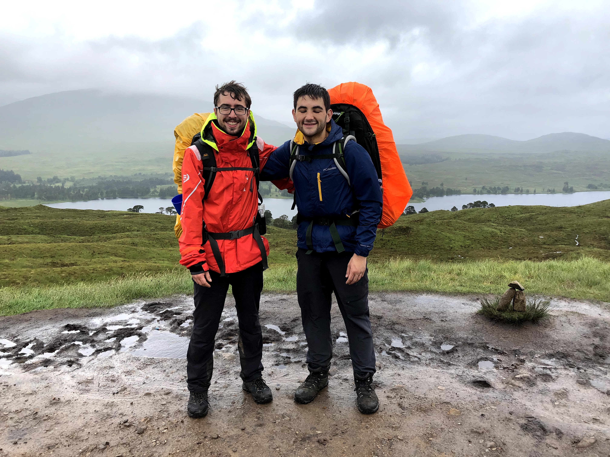
At the base of the valley the path, the way widened and the terrain became relatively easy. Past the hotel we entered an historic military road. It was marked by a sign laced with interesting information, much of this appears to have escaped google however.
What followed was a dull 3-mile uphill struggle alongside a dense wood. The views were of damp path and rolling meadow; whilst we’d made solid progress we found ourselves clock watching and were slightly apprehensive that the next 7miles into Glencoe would be another slog. Fortunately the path opened into some of the most spectacular highland scenery we had encountered. We could follow the winding path along the base of several significant peaks into the distance. Abandoned outbuildings littered the path, presumably a record of the ancient history of the road.
We were starting to overtake many of the walkers who had departed early from the bridge of Orchy. We met a man from Essex who spent some time complaining about his groups commitment to wild camping. Also attempting the 5 day route, he recommended us to do the Clarendon Way near Winchester for an entirely different and supposedly better executed kind of challenge.
Just as the rain started to fall, I stripped off my boots and socks to put on some blister plasters. We could see the next 2/3 miles of path climbing gradually up and out the valley. After around half an hour I realised that that valley was the famous glencoe valley. Once we were over the ridge, the valley opened up with spectacular views right down to Buachaille Etive Mòr. We stopped at the Glencoe mountain rage cafe for what proved my most rejuvenating break on the whole walk. A vegetable curry and can of Irn Bru put a swagger in my stride. We laughed at an advert for “summer tubing for £7”. The weather was damp, windy and just generally bleak; given our relentless exposure to it, we probably overestimated it’s prevalence. It was still difficult to believe that stripping off and sliding down some wet canvas in that resort would ever be the right thing to do.
We left the cafe mid afternoon and made our way down a steady path along the base of the valley. Although the scenery was superb, our proximity to the road made it feel much less remote that our previous 30 miles of walking. After about 3 miles we turned right and headed up the valley along the famous Devil's Staircase. Having not had a proper ascent since conic hill on the first day, it felt unusual but satisfying to get the legs pumping. We overtook a fair few walkers and ascended about 300m in impressive time.
The walk from the top of the valley, across the highlands and back down into Kinlochleven proved to be one of my favourite sections of the whole week. There was intermittent sun and rain and the mountains were spectacular; ultimately the walk felt like it had been brought under control. It was at this point that we had no doubt that we’d finish.
We struggled across a fast flowing river, and a couple of less aggressive ones and eventually made our way onto a downwards path. It took about an hour of gentle downhill to get to Kinlochleven. We followed some rusty looking hydroelectric infrastructure and mining track into what proved to be a very bleak village. We were surprised to find it was the home of the national ice climbing centre. We paid for a pitch at a small campsite on the edge of town and made our way to a smelly, but extremely effective, dry room.
It was fair to say we were knackered. With little interest in eating to facilitate a proper recovery, we hobbled down to the local fish and chips. I’d transitioned to sandals at this point, something which only seems to emphasise more the poor state of my feet. The fish and chips proved to be an all encompassing takeaway; we both demolished a large pizza and a large chips. After a few beers in the local pub, we made our way back into our tents, following the usual midge protocol of course.
Day 5 - “To Glen Nevis”
Apart from disturbance via a rather deep domestic argument occurring, I slept soundly. We continued the pattern of being last up.. The final day was a steady 13 miles and we knew that setting off at midday would still leave plenty of time to enjoy the Glen Nevis campsite at the base of Ben Nevis during the evening.
Breakfast consisted of instant pasta and some chocolate bars accrued at Co-op the previous day. There was a sense between the two of us that the walk was in the bag, with it came a more calm admiration of our surroundings and indeed each other’s company. There had been serious questions after the second day of whether my leg would make it; doubt over the finish obviously made the slow trudging worse. Now a slow trudge for 6 hours would mean finishing the WHW. It would be a piece of piss.
We left camp at around 12:00 and were faced with drizzle. With the weather still mild, the coat-or-no-coat dilemma was in the forefront of my mind. We were quickly climbing up and out of the valley and as the temperature dropped accordingly, I began to regret opting for no coat. Coat back on, with the heat of my body creating a greenhouse with the inside of my sailing jacket, my mood soured a little.
The track we were following turned into a building site high up the valley, with trucks reversing and carrying rubble from spot-to-spot. It seemed to be part of the same mining operation we had seen on the route down into Kinlochleven. About a mile further along, we entered another valley. The air was damp and the place felt moist, but the landscape was fabulous. The path followed the centre of the valley alongside a fairly aggressively flowing river. There were a couple of long abandoned stone structures; given how few people we’d seen, we thought they would’ve made an excellent Bothy.
After a couple of hours of enjoyable walking we hit a turn towards the end of the valley. By this point the weather was warm; and indeed it would continue to be warm until we departed from Glasgow 2 days later. We had lunch close to a couple of groups of walkers; the first we’d seen in 4 or 5 miles. It was around 3 in the afternoon and we knew there couldn’t have been more than 2 hours walking remaining. The sun was bright and to celebrate our spirits, we even braved a gentle yomp for around a mile. The move quickly felt ill advised; our legs started to hurt in all the unwanted places.
Via an inspection on the map, I worked out we could see Ben Nevis in the distance. This did little to boost morale as we knew we were camping at the base and yet the peak looked several miles off. The remainder of the walk was an exercise in persistence. After a small uphill walk into a managed forest, we started a slow descent into the Glen Nevis valley. We could see the Glen Nevis campsite teasing us way off in the distance. The path was winding and our pace was slowing, but we were pleased to be nearing the end. We were well over the 90-mile mark.
The campsite was luxury we’d not seen in several days. Sun high in the sky, we were greeted with well mown lawns, picnic areas and an extremely well equipped shop and fast food van. We each spent a tenner on various bits of fish, meat and bread for tea; supplemented with industrial quantities of Irn Bru. Later in the evening we plotted our route up Ben Nevis from the campsite bar. The ascent was large, but we decided that without the bags it would be by far the easiest day of walking of the trip. A groups of girls seemed to overhear us, a bottle of Prosecco consumed each, they asked if we were attempting the climb too. A fundraising weekend had turned into a hen do and they were seemingly aware that each drop of alcohol was going to draw misery in the following day; we enjoyed watching them battle up the final ascent after we’d made the peak.
Though we were head-to-toe in midge nets, we were fortunate to encounter only a few insects; although I did find yet another tick climbing across my arm. It must have brought the total number to around 10 for the trip; meanwhile Ramsay hadn’t seen a single one; it was a mystery that we presumed would never be solved.
Day 6 - “The end”
We awoke on Saturday morning to a glorious blue sky. The campsite was alive with activity, brushing teeth, packing backpacks and cooking breakfasts. Not wanting to get the Trangia going, we nourished on egg and bacon sandwiches from the fast food van. It felt like everyone in camp was setting out with the same ambition; to summit Ben Nevis (ideally whilst the weather was looking as good as it was).
Ben Nevis turned out to be fairly easy. With the packs off, Ramsay and I were able to ascend at a liberating pace. The path was incredibly busy, and in hindsight I would’ve either departed earlier or later. On both days we saw people ascending as late as 18:00; usually these were people running. As we struggling to get past walkers, we realised how sensible this was. It took us around 2 hours to reach the summit with visibility and temperature declining considerably throughout. The peak turned out to be a foggy zero degree busy place; we made a fast turn around after a picture at the peak and headed back to camp. Top to bottom, the whole thing took around 4hrs. If my description here appears brief, it’s because comparative to the long slogs we’d endured throughout the rest of the walk, it was extremely brief.
The final completion of the WHW would come the next day, on the short roadside walk to Fort William station. This felt like a bit of a formality. The real end happened at the top of Ben Nevis, and I would recommend anyone doing the WHW to attempt the summit. Like a glass of champagne on completing a long race, the weather treated us kindly all afternoon. We lay on the grass outside the Ben Nevis bunkhouse, where we enjoyed by far our nicest and most expensive meal of the walk. After polishing off our puddings, we recalled each of our day’s adventures and wrote the notes that would eventually become this blog. After a couple of drinks at the local youth hostel, we made our way back into our tents for an extremely well earned sleep.
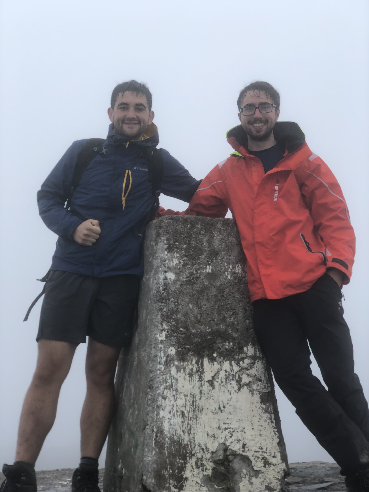